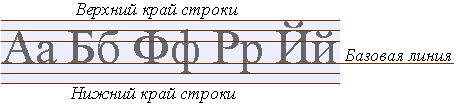

Глава 2
Свойства текста.
В этой главе пойдет речь о том, что можно сделать с текстом, применяя к элементам HTML содержащие в себе некий текст те или иные свойства CSS.
Ну поехали..
Выравнивание текста.
Если Вы помните, из курса HTML, для того что бы выровнять текст, например по центру экрана, мы применяли к тегу содержащему в себе текст атрибут align(выравнивание) и одно из его возможных значений center(по центру)
Запись имела такой вид:
<p align="center">текст по центру</p>
В CSS данную задачу берет на себя свойство text-align, которое выравнивает текстовое содержание относительно элемента родителя (например, блока div) или же окна браузера.
text-align (так же как и htmlловский атрибут
align) имеет следующие значения:
- left - Выровнять текст по левому краю элемента (по умолчанию).
- right - Выровнять текст по правому краю.
- center - Выровнять текст по центру.
- justify - Выровнять текст по обоим краям.
Теперь для того чтобы выровнять текст того же параграфа по центру следует писать так:
<p style="text-align: center">текст по центру </p>
- это в этом случае если мы, с помощью атрибута style, внедряем CSS непосредственно в HTML тег.
А вот в примере ниже используется тег <style> в заголовке документа:
<!DOCTYPE HTML PUBLIC "-//W3C//DTD HTML 4.01 Transitional//EN" "http://www.w3.org/TR/html4/loose.dtd">
<html>
<head>
<title>Выравнивание текста</title>
<style type="text/css">
h1 { text-align: center }
p { text-align: justify }
</style>
</head>
<body>
<h1>Всё о слонах</h1>
<p>Слон - самое крупное млекопитающее на нашей планете! Самый большой слон из когда-либо живущих на Земле был зарегистрирован в Анголе в 1956 году. Этот самец весил около 12 тон, а в высоту достигал 4,2 метра, что на метр выше среднего Африканского слона.</p>
<p>Слоны являются королевским символом Азиатской культуры и известны своей отличной памятью и высоким интеллектом. Аристотель однажды сказал, что слон - "животное, которое превосходит всех других в остроумии и интеллекте".</p>
</body>
</html>
Оформление текста.
Свойство text-decoration позволяет декорировать текст, присвоив ему одно или несколько значений из ниже представленных вариантов оформления текста.
Возможные значения:
- blink - Текст будет мигать.
- line-through - Делает текст перечеркнутым.
- overline - Надчёркивание текста.
- underline - Подчеркивание текста.
- none - Текст без оформления.
Пишется так:
<a href="index.html" style="text-decoration:none">Ссылка без подчёркивания</a>
Пример:
Файл mystyle.css
h1 {text-align: center}
h3 {text-align: left; text-decoration: underline}
a {text-decoration: underline}
a:hover {text-decoration:none}
p {text-align: justify}
Файл index.html
<!DOCTYPE HTML PUBLIC "-//W3C//DTD HTML 4.01 Transitional//EN" "http://www.w3.org/TR/html4/loose.dtd">
<html>
<head>
<title>Оформление текста</title>
<link rel="stylesheet" href="mystyle.css" type="text/css">
</head>
<body>
<h3>Меню:</h3>
<a href="index.html">Всё о слонах.</a><br>
<a href="elephant.html">Купить слона.</a>
<hr>
<h1>Всё о слонах</h1>
<p> Слон - самое крупное … … …</p>
<p>Слоны являются … … …</p>
</body>
</html>
Обратите внимание на внешний файл CSS в нем мы "декорировали" ссылку элемент <a>, причем делали это два раза первый раз a {text-decoration: underline} сделали её подчёркнутой, хотя можно было этого и не делать, так как тег <a> подчёркнут по умолчанию, а второй раз использовали так называемый псевдокласс hover и запретили подчеркивание a:hover {text-decoration:none}
Данный псевдокласс указывает на то, что применять к нему стилевое описание стоит лишь в том случае если пользователь навел курсор на этот элемент. Так если в примере навести курсор на одну из ссылок в меню то подчеркивание исчезнет, что создаёт определенный динамический эффект.. меню становиться "живым".
Впрочем, мы немного забежали вперёд.. о псевдоклассах речь пойдёт в отдельной главе.
Отступ первой строки.
Свойство text-indent - задаёт отступ первой строки в текстовом блоке с левой стороны, проще говоря делает "красную строку".
Расстояние от левого края окна браузера или же элемента родителя (блока в который помещен блок с текстом) может быть заданно в процентах от ширины окна браузера или же единицах измерения принятых в CSS.
В примере ниже расстояние отступа от левого края задаётся в пикселях (px):
<!DOCTYPE HTML PUBLIC "-//W3C//DTD HTML 4.01 Transitional//EN" "http://www.w3.org/TR/html4/loose.dtd">
<html>
<head>
<title>Красная строка</title>
<style type="text/css">
h1 {text-align: center}
p {text-align: justify; text-indent: 20px}
</style>
</head>
<body>
<h1>Всё о слонах</h1>
<p>Слон - самое крупное млекопитающее на нашей планете! Самый большой слон из когда-либо живущих на Земле был зарегистрирован в Анголе в 1956 году. Этот самец весил около 12 тон, а в высоту достигал 4,2 метра, что на метр выше среднего Африканского слона.</p>
<p>Слоны являются королевским символом Азиатской культуры и известны своей отличной памятью и высоким интеллектом. Аристотель однажды сказал, что слон - "животное, которое превосходит всех других в остроумии и интеллекте".</p>
</body>
</html>
Трансформация текста
Своийство text-transform трансформирует символы в указанном текстовом блоке, делая их заглавными или прописными по одному из правил в зависимости от присужденного значения данному свойству.
Значения:
- none - Текст отображается без каких-либо изменений.(по умолчанию)
- capitalize - Каждое слово в тексте отображается с заглавного символа.
- lowercase - Все символы преобразуются в нижний регистр.
- uppercase - Все символы преобразуются в верхний регистр.
Пример:
<!DOCTYPE HTML PUBLIC "-//W3C//DTD HTML 4.01 Transitional//EN" "http://www.w3.org/TR/html4/loose.dtd">
<html>
<head>
<title>Трансформация текста</title>
</head>
<body>
<p style="text-transform: capitalize">союз советских социалистических республик</p>
<p style="text-transform: lowercase">СССР ссср</p>
<p style="text-transform: uppercase">ссср СССР</p>
</body>
</html>
Вертикальное выравнивание
Вертикальное выравнивание текста в строке устанавливает свойство vertical-align
Возможные значения свойства vertical-align:
- baseline - Выравнивает базовую линию элемента по базовой линии родителя.
- bottom - Выравнивает элемент по нижней части строки.
- middle - Выравнивает средину элемента по базовой линии родителя и прибавляет половину высоты родительского элемента.
- sub - Нижний индекс (размер шрифта не меняется).
- super - Верхний индекс (размер шрифта не меняется).
- text-bottom - Нижняя граница элемента выравнивается по нижнему краю строки.
- text-top - Верхняя граница элемента выравнивается по верхнему краю строки.
- top - Выравнивает элемент по верхней части строки.
Базовая линия - это линия, на которой располагаются "сидят" символы в текстовой строке, Например буква "А" сидит прямо на этой линии, а вот строчная буква "у" сидит на ней же, но свесив ноги..
Взгляните на рисунок с разметкой строки:

Так же вертикальное выравнивание элемента относительно строки может выражаться в процентах, пикселях или любых других принятых в CSS единицах измерения, причем эти единицы могут принимать как положительные, так и отрицательные значения.
Пример:
<!DOCTYPE HTML PUBLIC "-//W3C//DTD HTML 4.01 Transitional//EN" "http://www.w3.org/TR/html4/loose.dtd">
<html>
<head>
<title>Вертикальное выравнивание текста</title>
</head>
<body>
<font size="+3">А и Б </font>
<span style="vertical-align: +5px">сидели на трубе </span>
<span style="vertical-align: bottom">А упало </span>
<span style="vertical-align: top">Б пропало.. </span>
<span style="vertical-align: 50%">что осталось на трубе?</span>
<hr>
формула воды: H<span style="vertical-align: sub">2</span>O
<hr>
<span>н</span>
<span style="vertical-align: -10px">а</span>
<span style="vertical-align: -20px">и</span>
<span style="vertical-align: -30px">с</span>
<span style="vertical-align: -40px">к</span>
<span style="vertical-align: -50px">о</span>
<span style="vertical-align: -60px">с</span>
<span style="vertical-align: -70px">о</span>
<span style="vertical-align: -80px">к</span>
</body>
</html>
Пробелы и перенос строки.
Набранный текст, в каком либо текстовом редакторе браузерами по умолчанию выводится на экран в виде сплошного текста, где переносы строк расставляются автоматически, а так же убираются лишние (более одного) пробелы между символами.
Свойство white-space имитирует работу тега <pre>, определяя показывать или нет пробелы между символов, если таковых больше чем один, а так же разрешает или запрещает перенос строки.
Может иметь следующие значения:
- normal - текст выводится как обычно (лишние пробелы убираются), переносы строк определяются автоматически. (по умолчанию)
- nowrap - запрещает автоматический перенос строки.
- pre - показывает текст в том виде в котором он был набран. пробелы и переносы строки не удаляются.
Пример:
<!DOCTYPE HTML PUBLIC "-//W3C//DTD HTML 4.01 Transitional//EN" "http://www.w3.org/TR/html4/loose.dtd">
<html>
<head>
<title>Пробелы и перенос строки</title>
</head>
<body>
<p style="white-space: pre">
Слон.
Дали туфельки слону.
Взял он туфельку одну
И сказал: - Нужны пошире,
И не две, а все четыре!
С. Я. Маршак.
</p>
<hr>
<p style="white-space: nowrap">
Это длинный предлинный текст, который вряд ли полностью поместится в одной строчке, по умолчанию в нужном месте, браузер перенес бы его на следующую строку, однако мы принудительно запретили это делать, с помощью значения nowrap свойства white-space. Так что теперь, по всей вероятности, в окне браузера появиться горизонтальная полоса прокрутки.. и зачем, спрашивается, мы это сделали?
</p>
</body>
</html>
При использовании nowrap текст в нужном месте можно переносить на следующую строку используя тег <br>
Расстояние между словами.
Свойство word-spacing задаёт расстояние между словами (группами символов не разделенными пробелом) в строке.
Значения:
- normal - Нормальное расстояние. (по умолчанию)
- px - Расстояние задаётся в пикселях или любых других единицах измерения принятых в CSS.
Пример:
<!DOCTYPE HTML PUBLIC "-//W3C//DTD HTML 4.01 Transitional//EN" "http://www.w3.org/TR/html4/loose.dtd">
<html>
<head>
<title>Расстояние между словами</title>
</head>
<body>
<p align="left" style="word-spacing: 10px">Расстояние между словами равно десяти пикселям</p>
<p align="left" style="word-spacing: -10px">Расстояние между словами может иметь отрицательное значение</p>
</body>
</html>
Межсимвольное расстояние.
А вот свойство letter-spacing определяет расстояние между символами в тексте и так же как и может word-spacing быть задано следующими значениями:
- normal - Нормальное расстояние. (по умолчанию)
- px - Расстояние задаётся в пикселях или любых других единицах измерения принятых в CSS.
Пример:
<!DOCTYPE HTML PUBLIC "-//W3C//DTD HTML 4.01 Transitional//EN" "http://www.w3.org/TR/html4/loose.dtd">
<html>
<head>
<title>Расстояние между символами</title>
</head>
<body>
<p style="letter-spacing: 5px">Расстояние между буковками равно пяти пикселям</p>
<p style="letter-spacing: -3px">А здесь буквы, из за отрицательного значения, будут наплывать друг на друга</p>
</body>
</html>
Интерлиньяж
Интерлиньяж - это расстояние между строками текста.
Расстояние между строками текста можно задать используя свойство line-height, сделать это можно следующими способами:
- normal - Норма (по умолчанию).
- % - Проценты. за сто процентов берется высота шрифта
- 0.5 - Множитель. Может быть использовано любое число больше ноля. Так, например множитель 0.5 будет равняться половинному межстрочному расстоянию, а 2 - двойному.
- px - Пиксели и любые другие единицы измерения, принятые в CSS.
Пример:
<!DOCTYPE HTML PUBLIC "-//W3C//DTD HTML 4.01 Transitional//EN" "http://www.w3.org/TR/html4/loose.dtd">
<html>
<head>
<title>Интерлиньяж</title>
</head>
<body>
<div style="line-height: 150%">
строка первая <br> строка вторая <br> строка третья <br> строка четвертая <br> строка пятая
</div>
<hr>
<div style="line-height: 0.5">
строка первая <br> строка вторая <br> строка третья <br> строка четвертая <br> строка пятая
</div>
<hr>
<div style="line-height: 25px">
строка первая <br> строка вторая <br> строка третья <br> строка четвертая <br> строка пятая
</div>
</body>
</html>
Полезные советы:
При декорировании текста, свойство - text-decoration, будьте благоразумны используя подчеркивание текста это может ввести в заблуждение посетителя страницы, он может подумать, что данный текст является ссылкой.
А Вам точно нужно использовать значение nowrap свойства white-space, запрет переноса строки? Появление горизонтальной полосы прокрутки мало кого вдохновляет..
Используя псевдокласс hover в сочетании с различными элементами и их возможными CSS свойствами можно добиться весьма интересных эффектов.